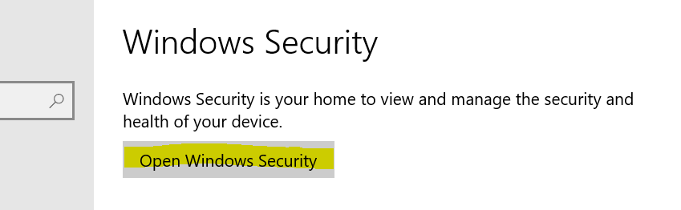

Introduction, use other sections as guide.
Improving Start Up Speed
The easiest way to decrease start up time for your machine is to lower your Windows graphics settings. Here are a couple ways to accomplish this:
- Turn off transparency effects
- Start by pressing the Windows key on your keyboard and opening Settings.
- Select Personalization from the options displayed.
- Go into the colors tab on the left side bar.
- Switch off the option for "Transparency effects"
- Lower Windows Graphics Settings
- Type "sysdm.cpl" in your system's search bar and press the Enter key.
- Navigate to the "Advanced" tab and open Settings under the Performance section.
- Select the "Adjust for best performance" option, then click apply on the bottom right to improve performance.
- Disable unnecessary start up programs
- Another way to improve boot up speed is to reduce the number of programs that open automatically and begin using up computing power. Start by pressing CTRL + ALT + DEL and opening the task manager from the options on the screen.
- Next navigate to the "Start Up" tab of the Task Manager. If these tabs are not visible, you must toggle the "More details" option at the bottom of the page.
- You should see a list of your programs and if they start automatically when your device is turned on. Each of these programs can be disabled on boot up by right clicking on the desired program and choosing "Disable".


Maintaining device performance
Improving the performance of your Windows machine involves turning off some of the unused programs that run in the background.
- The first of these is Windows Search.
- Follow these steps to disable the Search program:
- Enter "services.msc" in your device's Search bar. This will open a list of processes your computer is running.
- The process we are looking for will be listed as "Index Service" or "Windows Search".
- To stop this process simply right click on the corresponding row and click "Stop".
- If you find yourself frequently searching through your machine and the performance of this is impacted by your modifying this setting, you may choose to reactive Windows search in the same place you disabled it.
- Another process that may be draining your device is Windows Update Sharing.
- This can be disabled in settings under
Settings > Update & Security > Delivery Optimization
- Just move the switch under "Allow Downloads from other PCs" to the Off position
- Now that those programs are disabled, you can clean up any other unnecessary background processes.
- All Background Apps are listed in settings under
Settings > Privacy > Background Apps
- You can disable all background activity by flipping the top switch, or you can target individual apps by moving the slider next to the desired program.


Cleaning up system storage
To free up space on your machine, you have to clear out files and apps that you no longer need.
- The best place to start is in the Recycle Bin where files you already deleted are stored until you clear them out.
- There is a shortcut to the Recycle Bin located on your desktop, open it to see what files are stored there.
- You can delete files individually by right clicking them and selecting "Delete".
- You can clear out all the files by navigating to Recycle Bin Tools. Then select the "Empty Recycle Bin" option and respond Yes to the prompts.
- Another way of clearing up storage and performance is by cleaning up your Desktop. The files and icons on your desktop are constantly being loaded there, so limiting the contents is important. Anything that doesn't require quick access can be moved to another folder on your device.
- You can clear up a lot of system storage by removing any extra large files that you no longer need. Any directory can be sorted by size to see which files are taking up the most space so you can decide if they are worth keeping or not.
- You can clear up even more space by removing any programs that aren't being used. Windows comes with many default programs installed, and your device manufacturer may
have also added programs with similar functions. Deleting duplicate programs is an easy way to free up some storage. You can find a list of all the apps installed on your device in the settings under
Settings > Apps
- To uninstall a program, click on it and select "Uninstall" and complete the process by approving any further prompts that appear.
These tips should have provided some insight on how to clear device storage. In order to maintain free space, these processes should be completed on a regular basis.
Keeping your device secure
Below are tips on keeping your Windows computer secure:
- The most important part of device security is keeping your operating system up to date. This ensures the latest security features are installed. You can make sure you have the latest Windows update in settings under
Settings > Updates & Security
- If the latest Windows version is installed, you should see an icon displaying "You're up to date" along with the most recent check for updates.
- The most efficient way to keep your machine up to date is by automatically installing updates during inactive hours. You can set personalized hours and ensure your device is updating properly under "Change active hours"
- Another key to keeping your device secure is not installing any malware that can cause unwanted issues. The easiest way to do this is by only installing trusted apps and documents. Any suspicious files that have already been installed should be removed. Windows has a built in anti-malware program titled "Windows Security". This program can be accessed through settings
Settings > Updates & Security > Windows Security
- Click the "Open Windows Security" button to open the security interface. 
- To scan for malware, open the Virus & threat protection page and click the "Quick scan" button.
- It may take a few minutes to complete the scan, but it inform you if it detects any problems with your system.